| Field | Value |
|---|---|
| Product | USiS — University Student Information System |
| Document type | Complete System Specification (SRS + Architecture + Features + LLD) |
| Date | November 2026 |
| Classification | Proprietary |
| Field | Value |
|---|---|
| Document ID | SRS-USIS-001 |
| Product | USiS (University Student Information System) |
| Repository | WMSU/wmsu-platform (apps/enrollment-web, apps/base-api module enrollment) |
| Version | 1.0 |
| Date | November 2026 |
| Classification | Proprietary |
This Software Requirements Specification defines functional and non-functional requirements for USiS, the comprehensive student information system managing the complete academic lifecycle from admissions through graduation — including student registration, enrollment, advising, scheduling, academic records, grade management, assessment coordination, clearance processing, faculty evaluation, and student support services.
In scope
enrollment)Out of scope
/apply*)| Term | Definition |
|---|---|
| USiS | University Student Information System — enrollment and academic lifecycle platform |
| COR | Certificate of Registration — official enrollment document issued to students |
| Assessment | Tuition and fee calculation prepared for an enrollment period and synchronized with UFMS for payment processing |
| Role pack | Collection of USiS permission codes mapped from University Platform Access Identity role |
| Enrollment workflow | State-based process from draft enrollment through advising, payment verification, registrar approval, to registered status |
| Clearance graph | Network of office-specific clearance requirements and status checks across university departments |
| Grade projection | Academic grade record synchronized from USiS to TORMS for transcript generation |
| Section | Class offering with instructor, schedule, room, and enrollment capacity |
WMSU/wmsu-platform/README.mdapps/web-portal/public/docs/USIS-Complete-Guide.htmlapps/web-portal/public/docs/USIS-API-Specs-Manual.htmlUSiS operates within the WMSU Campus Information System (CIS) modular architecture:
| Component | Technology | Role |
|---|---|---|
| Enrollment web | React 19 + Vite | Multi-role portal UI (student, faculty, registrar, offices) |
| Base API enrollment module | AdonisJS 7 domain module | REST services at /api/v1/enrollment/* |
| Database | PostgreSQL schema enrollment |
Academic system of record (SoR) |
| Identity provider | University Platform Access | Authentication, authorization, MFA, role management |
| Queue system | BullMQ + Redis | Background jobs (notifications, batch processing, reports) |
| Surface | Dev port | Production access |
|---|---|---|
| Enrollment web | http://127.0.0.1:5180 |
https://enrollment.wmsu.edu.ph (example) |
| Base API | http://127.0.0.1:3500 |
https://api.wmsu.edu.ph |
| Identity API | http://127.0.0.1:3411 |
https://auth.wmsu.edu.ph |
| Portal launcher | http://127.0.0.1:5173 |
https://portal.wmsu.edu.ph |
Health endpoint: GET /health → { status: 'ok', service: 'base-api', module: 'enrollment' }
| Role | Primary capabilities | Access level |
|---|---|---|
| Student | View profile, enroll in courses, view schedules/grades, submit support requests, download COR, track payments, evaluate faculty | Own data only |
| Faculty | View assigned classes, encode/submit grades, conduct advising sessions, generate class reports, manage attendance | Assigned classes |
| Adviser | Review advisee enrollments, approve/recommend course selections, monitor academic progress | Assigned students |
| Registrar | Manage applicants, approve enrollments, configure academic structures, oversee all registrations, generate institutional reports | System-wide academic data |
| Admissions Officer | Manage entrance exam schedules, process applications, track admission workflows | Applicant records |
| OSA Staff | Manage student discipline, organization accreditations, event coordination | Student conduct records |
| Guidance Counselor | Schedule counseling sessions, maintain confidential records, issue clearances | Counseling records |
| Health Services Staff | Maintain medical records, manage health clearances, track vaccinations | Student health records |
| Scholarship Officer | Manage scholarship awards, track disbursements, monitor academic requirements | Scholarship records |
| Cashier (read-only) | View assessment and payment status for student services | Payment status queries |
| Identity Administrator | Full system access when enrollment platform granted |
All USiS permissions |
Frontend permission checks provide user experience only; API enforces authorization on every authenticated route.
enrollment/apply* routes| ID | Requirement | Priority |
|---|---|---|
| FR-AUTH-001 | System shall authenticate all users via University Platform Access SSO JWKS verification | Must |
| FR-AUTH-002 | System shall resolve user home path based on role packs (student → /student, registrar → /registrar, faculty → /faculty) |
Must |
| FR-AUTH-003 | System shall enforce permission checks on every API endpoint using role-specific permission codes | Must |
| FR-AUTH-004 | System shall support MFA for privileged roles (registrar, office heads) when Identity enforces | Must |
| FR-AUTH-005 | System shall provide graceful error handling when Identity service unavailable | Must |
| ID | Requirement | Priority |
|---|---|---|
| FR-STU-001 | Students shall view and update demographic profile information with field-level validation | Must |
| FR-STU-002 | Students shall initiate enrollment for available academic terms within enrollment windows | Must |
| FR-STU-003 | Students shall search available sections by subject, instructor, schedule, and available seats | Must |
| FR-STU-004 | Students shall add sections to enrollment with real-time conflict detection (schedule, prerequisite) | Must |
| FR-STU-005 | Students shall view total units and enforcement of minimum/maximum load limits | Must |
| FR-STU-006 | Students shall submit enrollment for advising approval when required by program | Must |
| FR-STU-007 | Students shall view assessment amounts after enrollment submission with line-item breakdown | Must |
| FR-STU-008 | Students shall view payment status synchronized from UFMS without locally caching paid state | Must |
| FR-STU-009 | Students shall download PDF Certificate of Registration (COR) after enrollment approval | Must |
| FR-STU-010 | Students shall view class schedules in calendar and list formats with room/instructor details | Must |
| FR-STU-011 | Students shall view posted grades by term with GPA calculation | Must |
| FR-STU-012 | Students shall view academic history including all prior enrollments and grades | Must |
| FR-STU-013 | Students shall submit support requests to designated offices (OSA, Guidance, Health, Scholarship) | Must |
| FR-STU-014 | Students shall submit organization accreditation applications with file attachments | Should |
| FR-STU-015 | Students shall request student ID cards through portal | Should |
| FR-STU-016 | Students shall obtain queue tickets for office services | Should |
| FR-STU-017 | Students shall evaluate faculty anonymously during evaluation windows | Must |
| FR-STU-018 | Students shall view clearance status with office-by-office breakdown | Must |
| FR-STU-019 | Students shall download clearance certificates with QR verification codes | Must |
| ID | Requirement | Priority |
|---|---|---|
| FR-FAC-001 | Faculty shall view assigned class sections with enrollment rosters | Must |
| FR-FAC-002 | Faculty shall encode preliminary and final grades for enrolled students | Must |
| FR-FAC-003 | Faculty shall validate grade completeness before submission | Must |
| FR-FAC-004 | Faculty shall submit grades with digital signature/confirmation | Must |
| FR-FAC-005 | Faculty shall view grade submission history and status | Must |
| FR-FAC-006 | Faculty shall request grade corrections with justification after submission | Should |
| FR-FAC-007 | Faculty shall download class rosters as CSV and PDF | Must |
| FR-FAC-008 | Faculty shall mark student attendance by session | Should |
| FR-FAC-009 | Faculty shall view advisee list with enrollment status | Must |
| FR-FAC-010 | Faculty shall approve/reject advisee enrollment plans | Must |
| FR-FAC-011 | Faculty shall add advising notes and recommendations | Must |
| FR-FAC-012 | Faculty shall view evaluation summary results (anonymized) | Should |
| ID | Requirement | Priority |
|---|---|---|
| FR-REG-001 | Registrar shall view and search applicant records from admission pipeline | Must |
| FR-REG-002 | Registrar shall admit applicants with student number assignment and Identity account provisioning | Must |
| FR-REG-003 | Registrar shall view all student enrollments with filtering by term, program, status | Must |
| FR-REG-004 | Registrar shall approve or reject enrollment submissions with reason codes | Must |
| FR-REG-005 | Registrar shall perform batch enrollment approval with selection criteria | Should |
| FR-REG-006 | Registrar shall override enrollment business rules with audit logging | Must |
| FR-REG-007 | Registrar shall manage academic calendar with term dates and enrollment windows | Must |
| FR-REG-008 | Registrar shall configure programs, curricula, and courses | Must |
| FR-REG-009 | Registrar shall define section offerings with instructor, schedule, room, capacity | Must |
| FR-REG-010 | Registrar shall configure prerequisite and co-requisite rules | Must |
| FR-REG-011 | Registrar shall configure grading systems and policies by program | Must |
| FR-REG-012 | Registrar shall generate enrollment reports (summary by program, status, term) | Must |
| FR-REG-013 | Registrar shall generate grade reports (distribution, dean's list, deficiency) | Must |
| FR-REG-014 | Registrar shall export reports as CSV, Excel, and PDF | Must |
| FR-REG-015 | Registrar shall monitor grade submission status across all sections | Must |
| FR-REG-016 | Registrar shall initiate faculty evaluation periods by term | Must |
| FR-REG-017 | Registrar shall view aggregated evaluation results with filtering | Should |
| FR-REG-018 | Registrar shall manage waitlists and process seat releases | Should |
| ID | Requirement | Priority |
|---|---|---|
| FR-OFF-001 | Admissions officers shall schedule entrance exam sessions with capacity management | Must |
| FR-OFF-002 | Admissions officers shall view exam results and track admission decisions | Must |
| FR-OFF-003 | OSA staff shall manage student discipline cases with confidential records | Must |
| FR-OFF-004 | OSA staff shall process organization accreditation applications with approval workflow | Must |
| FR-OFF-005 | OSA staff shall coordinate campus events and student participation tracking | Should |
| FR-OFF-006 | Guidance counselors shall schedule confidential counseling sessions | Must |
| FR-OFF-007 | Guidance counselors shall maintain counseling records with restricted access | Must |
| FR-OFF-008 | Guidance counselors shall issue guidance clearances | Must |
| FR-OFF-009 | Health services staff shall maintain student medical records | Must |
| FR-OFF-010 | Health services staff shall track vaccinations and health requirements | Must |
| FR-OFF-011 | Health services staff shall issue health clearances | Must |
| FR-OFF-012 | Scholarship officers shall manage scholarship awards by type and amount | Must |
| FR-OFF-013 | Scholarship officers shall track disbursement schedules | Must |
| FR-OFF-014 | Scholarship officers shall monitor scholarship academic requirements | Must |
| FR-OFF-015 | All offices shall contribute to student clearance status graph | Must |
| ID | Requirement | Priority |
|---|---|---|
| FR-PAY-001 | System shall prepare tuition assessment documents from enrollment data | Must |
| FR-PAY-002 | System shall synchronize assessment data to UFMS via internal API | Must |
| FR-PAY-003 | System shall query UFMS for payment verification status | Must |
| FR-PAY-004 | System shall block enrollment progression when payment pending per business rules | Must |
| FR-PAY-005 | System shall never locally cache or invent "payment verified" status | Must |
| FR-PAY-006 | System shall display assessment line items from configured fee schedules | Must |
| FR-PAY-007 | System shall support installment payment plans tracked in UFMS | Should |
| ID | Requirement | Priority |
|---|---|---|
| FR-GRD-001 | System shall enforce grade encoding deadlines by academic calendar | Must |
| FR-GRD-002 | System shall validate grade values against configured grading system | Must |
| FR-GRD-003 | System shall calculate GPA using weighted credit hours | Must |
| FR-GRD-004 | System shall lock submitted grades from faculty modification | Must |
| FR-GRD-005 | System shall process registrar-approved grade corrections with audit trail | Must |
| FR-GRD-006 | System shall expose grade projection API for TORMS consumption | Must |
| FR-GRD-007 | System shall maintain grade history for all correction cycles | Must |
| ID | Requirement | Priority |
|---|---|---|
| FR-CLR-001 | System shall maintain configurable clearance requirements by office and term | Must |
| FR-CLR-002 | System shall aggregate clearance status from multiple office systems | Must |
| FR-CLR-003 | System shall generate clearance certificates with QR verification tokens | Must |
| FR-CLR-004 | System shall provide public unauthenticated clearance verification endpoint | Must |
| FR-CLR-005 | System shall enforce clearance requirements for enrollment, graduation, and document issuance | Must |
| ID | Requirement | Priority |
|---|---|---|
| FR-EVL-001 | System shall configure evaluation periods by term with questionnaire templates | Must |
| FR-EVL-002 | System shall require students to evaluate enrolled faculty within evaluation window | Must |
| FR-EVL-003 | System shall enforce anonymous submission (no linkage to student identity in results) | Must |
| FR-EVL-004 | System shall aggregate evaluation responses with statistical summaries | Must |
| FR-EVL-005 | System shall restrict raw evaluation access to authorized administrators | Must |
| FR-EVL-006 | Faculty shall view anonymized aggregated results for own sections | Should |
| ID | Requirement | Priority |
|---|---|---|
| FR-RPT-001 | System shall generate enrollment summary reports by term, program, level | Must |
| FR-RPT-002 | System shall generate grade distribution reports by course and section | Must |
| FR-RPT-003 | System shall generate dean's list and academic probation lists | Must |
| FR-RPT-004 | System shall generate graduation candidate lists | Must |
| FR-RPT-005 | System shall export all reports in CSV, Excel, and PDF formats | Must |
| FR-RPT-006 | System shall log all report exports with user and timestamp for audit | Must |
| Interface | Direction | Protocol | Purpose |
|---|---|---|---|
| University Platform Access | Inbound | OIDC/JWKS | SSO authentication, JWT verification, role resolution |
| UFMS Finance APIs | Outbound | REST+JSON | Assessment upsert, payment status query, clearance verification |
| TORMS Records APIs | Outbound | REST+JSON | Grade projection sync, academic history provision |
| Portal Admissions | Inbound | REST+JSON | Applicant data sync from entrance exam and application system |
| SMTP/SMS Gateway | Outbound | SMTP/HTTP | Enrollment notifications, grade alerts, deadline reminders |
| Object Storage | Outbound | S3-compatible | Document attachments (support requests, ID photos) |
Enrollment API base: /api/v1/enrollment/*
OpenAPI documentation: Available at /api/v1/enrollment/docs (Swagger UI)
Authentication: Bearer JWT from University Platform Access in Authorization header
Internal service routes: /api/v1/enrollment/internal/* protected by X-Service-Api-Key header
| ID | Requirement | Target |
|---|---|---|
| NFR-PERF-001 | API response time (p95) for standard queries | ≤ 2 seconds |
| NFR-PERF-002 | API response time (p95) for enrollment submission | ≤ 5 seconds |
| NFR-PERF-003 | Concurrent user support during enrollment peak | ≥ 500 active sessions |
| NFR-PERF-004 | Health check endpoint response time | ≤ 500 ms |
| NFR-PERF-005 | Report generation for standard queries | ≤ 10 seconds |
| NFR-PERF-006 | Real-time conflict detection during enrollment | ≤ 1 second |
| ID | Requirement |
|---|---|
| NFR-SCAL-001 | Support ≥15,000 enrolled students per term |
| NFR-SCAL-002 | Support ≥1,000 concurrent enrollment transactions |
| NFR-SCAL-003 | Horizontal scaling of API replicas without session affinity |
| NFR-SCAL-004 | Database read replicas for reporting queries |
| ID | Requirement |
|---|---|
| NFR-SEC-001 | TLS 1.2+ required for all client-server communication |
| NFR-SEC-002 | RBAC enforcement on every authenticated API endpoint |
| NFR-SEC-003 | Service-to-service communication via API keys for internal routes |
| NFR-SEC-004 | Sensitive data (grades, discipline, counseling) encrypted at rest |
| NFR-SEC-005 | Password policy and MFA enforcement delegated to Identity service |
| NFR-SEC-006 | CORS allowlist limited to authorized web client origins |
| NFR-SEC-007 | Rate limiting on public clearance verification endpoints |
| NFR-SEC-008 | Audit logging of privileged operations (enrollment override, grade corrections) |
| NFR-SEC-009 | Non-root container execution in production |
| NFR-SEC-010 | Regular dependency vulnerability scanning and patching |
| ID | Requirement |
|---|---|
| NFR-REL-001 | System availability ≥99.5% during enrollment periods |
| NFR-REL-002 | Automated database backups (daily incremental, weekly full) |
| NFR-REL-003 | Point-in-time recovery capability ≤15 minutes RPO |
| NFR-REL-004 | Documented disaster recovery procedures with quarterly drill |
| NFR-REL-005 | Graceful degradation when UFMS/TORMS temporarily unavailable |
| ID | Requirement |
|---|---|
| NFR-MAIN-001 | Modular domain architecture with clear separation of concerns |
| NFR-MAIN-002 | Comprehensive API documentation (OpenAPI 3.0+) |
| NFR-MAIN-003 | Structured logging with correlation IDs for request tracing |
| NFR-MAIN-004 | Observability via Sentry/OpenTelemetry when configured |
| NFR-MAIN-005 | Database schema migrations versioned and reversible |
| ID | Requirement |
|---|---|
| NFR-COMP-001 | Data privacy compliance with RA 10173 (Data Privacy Act of 2012) |
| NFR-COMP-002 | Purpose limitation for student personal data collection |
| NFR-COMP-003 | Student consent management for optional data uses |
| NFR-COMP-004 | Data retention policies aligned with university records management |
| NFR-COMP-005 | FERPA-equivalent protections for educational records |
| Scenario | Expected result | Test type |
|---|---|---|
| SSO login as student | Redirect to /student with profile data |
Integration |
| SSO login as registrar | Redirect to /registrar with system dashboard |
Integration |
| Enroll in section with prerequisite not met | Error message with missing prerequisite details | Unit |
| Enroll in section with schedule conflict | Error message with conflicting section details | Unit |
| Submit enrollment for advising | Status changes to "pending_advising" | Integration |
| Faculty encode grades | Grades saved; submission blocked until complete | E2E |
| Faculty submit grades | Grades locked; visible to student | E2E |
| Query UFMS for verified payment | Enrollment progresses to registrar approval | Integration |
| Query UFMS for pending payment | Enrollment blocked with payment required message | Integration |
| Generate clearance certificate | PDF with QR code generated | E2E |
| Verify valid clearance QR | Public endpoint returns valid clearance data | API test |
| Verify invalid clearance QR | Public endpoint returns not found / invalid | API test |
| Sync grades to TORMS | TORMS receives grade projections via internal API | Integration |
| Scenario | Expected result | Test type |
|---|---|---|
| 500 concurrent enrollments | p95 response time ≤5s, no errors | Load test |
| Unauthorized API access | HTTP 401/403 with error message | Security |
| Horizontal scaling test | Add replica; traffic balanced; session independent | Scalability |
| Database failover | Recovery within 15 minutes with data integrity | DR drill |
| Version | Date | Description |
|---|---|---|
| 1.0 | November 2026 | Complete System Specification from wmsu-platform enrollment module |
End of SRS — USiS
| Field | Value |
|---|---|
| Document ID | AD-USIS-001 |
| Product | USiS |
| Companions | USiS-SRS.md · USiS-Features-Requirements.md · USiS-LLD.md |
| Date | November 2026 |
Architecture design for USiS within the WMSU Campus Information System modular monolith — covering system context, container architecture, domain module organization, security architecture, deployment topology, integration patterns, and quality attributes.
USiS operates within the CIS ecosystem, integrating with Identity, UFMS, TORMS, and the Portal:
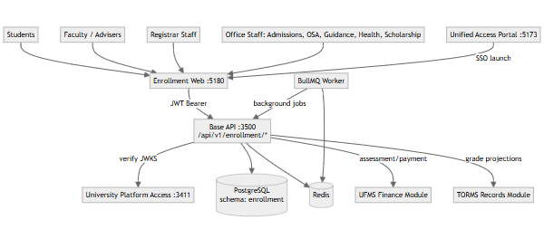
Key relationships:
| Container | Technology | Port | Purpose |
|---|---|---|---|
| Enrollment web | React 19 + Vite | 5180 | Multi-role portal UI (student, faculty, registrar, offices) with responsive design |
| Base API (enrollment module) | AdonisJS 7 + Lucid ORM | 3500 | Domain services, controllers, validators, business logic |
| PostgreSQL | PostgreSQL 15+ | 5432 | Schema enrollment — academic system of record |
| Redis | Redis 7+ | 6379 | Session cache, queue backend, real-time data |
| BullMQ Worker | Node.js + BullMQ | N/A | Background job processor (notifications, reports, sync) |
| University Platform Access | Identity service | 3411 | Authentication, authorization, MFA, user management |
| Unified Access Portal | React SPA | 5173 | SSO launcher and guest admissions UI |
Health monitoring: GET /health returns service status and active module checks.
Deployment notes:
enrollment) within shared wmsu_cis databaseUSiS enrollment module organized by academic lifecycle domains:
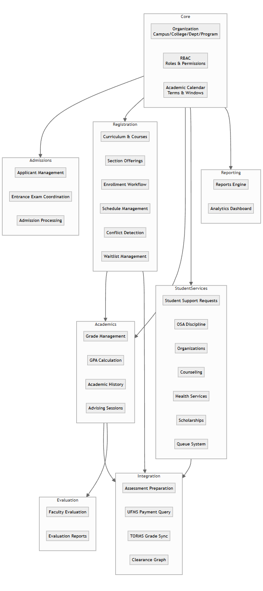
Domain responsibilities:
| Domain | Key entities | Services |
|---|---|---|
| Core | Organization, Campus, College, Department, Program, AcademicTerm, EnrollmentWindow | Org hierarchy, calendar management, RBAC |
| Admissions | Applicant, EntranceExam, AdmissionDecision | Applicant tracking, exam scheduling, admission workflow |
| Registration | Curriculum, Course, Section, Enrollment, EnrollmentItem, Prerequisite | Section offerings, enrollment workflow, conflict detection, waitlist |
| Academics | Grade, GradeSubmission, AcademicRecord, AdvisingSession | Grade encoding, submission, GPA calculation, advising |
| Student Services | SupportRequest, DisciplineCase, Organization, CounselingSession, HealthRecord, Scholarship | Multi-office student support, clearance contribution |
| Integration | Assessment, PaymentStatus, GradeProjection, ClearanceItem | UFMS/TORMS handoff, clearance aggregation |
| Evaluation | EvaluationPeriod, EvaluationResponse, EvaluationSummary | Anonymous faculty evaluation |
| Reporting | Report, ReportExport, Dashboard | Enrollment/grade reports, analytics |
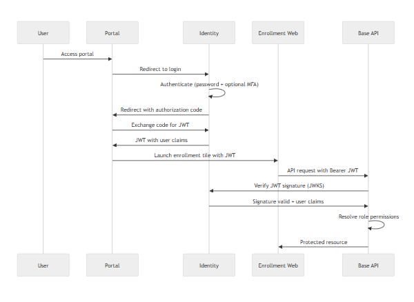
Security controls:
| Layer | Control | Implementation |
|---|---|---|
| Transport | TLS 1.2+ | Reverse proxy/ingress termination |
| Authentication | OIDC/JWT | Identity service RS256 tokens |
| Authorization | RBAC | Permission checks on every API endpoint |
| API protection | Rate limiting | Redis-backed rate limiter |
| Secrets | Environment variables | Never in codebase or client |
| Database | Schema isolation | enrollment schema, role-based PG access |
| Internal APIs | Service keys | X-Service-Api-Key header validation |
| Public endpoints | Rate limiting | Clearance verification endpoint |
USiS defines granular permissions mapped to Identity roles:
Permission categories:
enrollment.* — Enrollment CRUD and approvalgrades.* — Grade encoding, submission, correctionsstudents.* — Student profile and recordssections.* — Section managementadvising.* — Advising workflowsoffices.* — Office-specific permissions (OSA, Guidance, Health, Scholarship)reports.* — Report generation and exportevaluation.* — Faculty evaluation managementRole examples:
student role → enrollment.own, grades.view_own, clearance.view_ownfaculty role → grades.encode, grades.submit, advising.manageregistrar role → enrollment.approve, students.manage, reports.exportosa_staff role → offices.osa.*, students.disciplinePostgreSQL schema enrollment contains all USiS tables:
Core tables:
organizations, campuses, colleges, departments, programsacademic_terms, enrollment_windowsusers (Identity reference cache)Academic structure:
curricula, courses, prerequisites, sectionsinstructors, room_schedulesEnrollment lifecycle:
enrollments, enrollment_items, enrollment_historywaitlistsGrades:
grades, grade_submissions, grade_historyacademic_records (computed)Student services:
support_requests, discipline_cases, organizationscounseling_sessions, health_records, scholarshipsIntegration:
assessments, payment_status_cache (UFMS)grade_projections (TORMS)clearance_items, clearance_certificatesEvaluation:
evaluation_periods, evaluation_responsesReporting:
report_exports (audit log)enrollment.uims_adonis_schema tablenode ace migration:run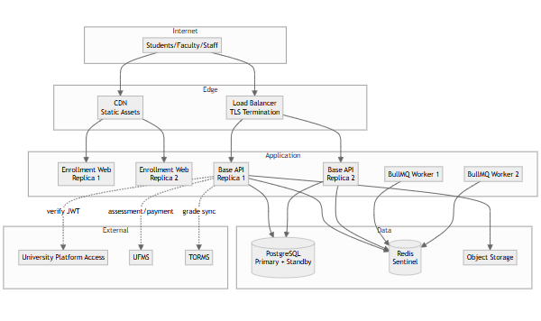
Sizing guidance (500 concurrent users):
Scalability:
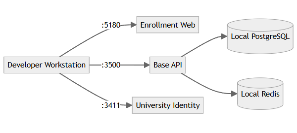
Local ports:
Infrastructure: Docker Compose for PostgreSQL, Redis, MinIO
UFMS Integration (Financial):
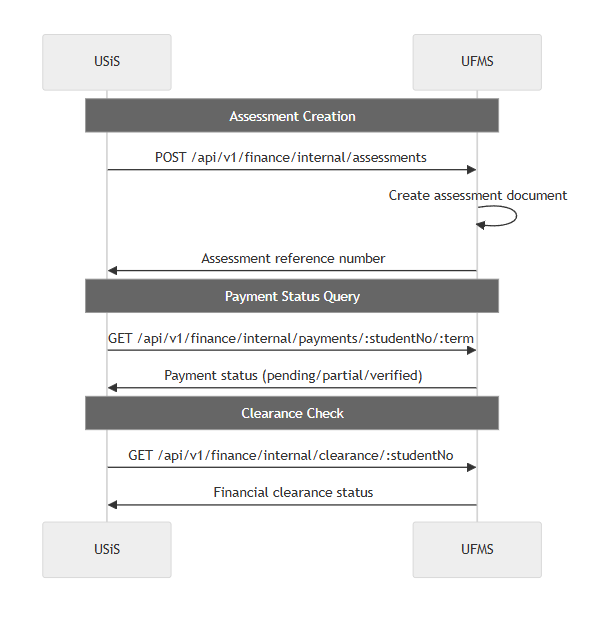
TORMS Integration (Academic Records):
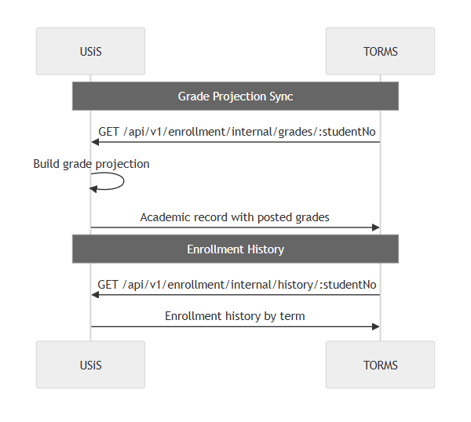
Service-to-service security:
X-Service-Api-Key header| System | Protocol | Pattern | Frequency |
|---|---|---|---|
| Portal Admissions | REST API | Applicant sync | Real-time webhook + nightly batch |
| SMTP Gateway | SMTP | Email notifications | Event-driven |
| SMS Gateway | HTTP API | SMS alerts | Event-driven |
| Object Storage (S3) | S3 API | File uploads | On-demand |
Optimization strategies:
Monitoring:
Horizontal scaling:
Vertical limits:
Failure handling:
Data integrity:
Code organization:
Operational:
Data privacy (RA 10173):
Academic records protection:
End of Architecture Design — USiS
| Field | Value |
|---|---|
| Document ID | FEAT-USIS-001 |
| Product | USiS |
| Companions | USiS-SRS.md · USiS-LLD.md |
| Date | November 2026 |
USiS provides comprehensive student information management across the complete academic lifecycle:
| Area | Features | Status |
|---|---|---|
| Authentication | University Platform Access SSO integration, role-based routing | Delivered |
| Student Portal | Profile, enrollment workflow, schedule, assessments, COR, grades, history | Delivered |
| Faculty Portal | Class rosters, grade encoding/submission, advising, reports | Delivered |
| Registrar Portal | Applicant management, enrollment approval, academic configuration, reports | Delivered |
| Office Portals | Admissions, OSA, Guidance, Health Services, Scholarship management | Delivered |
| Assessment Integration | UFMS assessment/payment handoff with real-time status sync | Delivered |
| Grade Management | Encode, submit, corrections, GPA calculation, TORMS sync | Delivered |
| Clearance System | Multi-office clearance graph, certificate generation, QR verification | Delivered |
| Faculty Evaluation | Anonymous evaluation, aggregated results | Delivered |
| Reporting | Enrollment, grade, clearance, scholarship reports with export | Delivered |
| Feature ID | Feature | Description | Priority | Actors |
|---|---|---|---|---|
| F-AUTH-01 | SSO Authentication | University Platform Access OIDC/JWT authentication | Must | All |
| F-AUTH-02 | Role-based Routing | Automatic home path resolution (student/faculty/registrar/office) | Must | All |
| F-AUTH-03 | Permission Enforcement | Granular permission checks on all API endpoints | Must | System |
| F-STU-01 | Student Profile | View/edit demographic info, contact details, emergency contacts | Must | Student |
| F-STU-02 | Enrollment Workflow | Search sections, add to cart, conflict detection, submit for approval | Must | Student |
| F-STU-03 | Schedule Viewing | Calendar and list views of enrolled sections with details | Must | Student |
| F-STU-04 | Assessment View | Line-item assessment breakdown from UFMS integration | Must | Student |
| F-STU-05 | Payment Status | Real-time UFMS payment verification status display | Must | Student |
| F-STU-06 | COR Generation | Download PDF Certificate of Registration after approval | Must | Student |
| F-STU-07 | Grade Viewing | Posted grades by term with GPA calculation | Must | Student |
| F-STU-08 | Academic History | Complete enrollment and grade history across all terms | Must | Student |
| F-STU-09 | Support Requests | Submit help requests to offices (OSA, Guidance, Health, Scholarship) | Must | Student |
| F-STU-10 | Organization Applications | Apply for student organization accreditation with attachments | Should | Student |
| F-STU-11 | ID Card Request | Digital student ID request submission | Should | Student |
| F-STU-12 | Queue Tickets | Obtain service queue numbers for office visits | Should | Student |
| F-STU-13 | Faculty Evaluation | Anonymous faculty evaluation during evaluation windows | Must | Student |
| F-STU-14 | Clearance Status | View office-by-office clearance breakdown | Must | Student |
| F-STU-15 | Clearance Certificate | Download clearance certificate with QR verification code | Must | Student |
| F-FAC-01 | Class Rosters | View enrolled students in assigned sections | Must | Faculty |
| F-FAC-02 | Grade Encoding | Enter preliminary and final grades with validation | Must | Faculty |
| F-FAC-03 | Grade Submission | Submit completed grades with digital confirmation | Must | Faculty |
| F-FAC-04 | Grade History | View submission history and status by section | Must | Faculty |
| F-FAC-05 | Grade Corrections | Request corrections after submission with justification | Should | Faculty |
| F-FAC-06 | Roster Export | Download class rosters as CSV and PDF | Must | Faculty |
| F-FAC-07 | Attendance Tracking | Mark student attendance by session | Should | Faculty |
| F-FAC-08 | Advisee Management | View assigned advisees with enrollment status | Must | Faculty/Adviser |
| F-FAC-09 | Advising Approval | Approve or recommend modifications to advisee enrollments | Must | Faculty/Adviser |
| F-FAC-10 | Advising Notes | Add recommendations and session notes | Must | Faculty/Adviser |
| F-FAC-11 | Evaluation Results | View anonymized aggregated evaluation results | Should | Faculty |
| F-REG-01 | Applicant Management | View/search applicants from admission pipeline | Must | Registrar |
| F-REG-02 | Student Admission | Admit applicants with student number and Identity provisioning | Must | Registrar |
| F-REG-03 | Enrollment Review | View all enrollments with advanced filtering | Must | Registrar |
| F-REG-04 | Enrollment Approval | Approve/reject enrollments with reason codes | Must | Registrar |
| F-REG-05 | Batch Approval | Process multiple enrollments with criteria selection | Should | Registrar |
| F-REG-06 | Business Rule Override | Override system rules with audit logging | Must | Registrar |
| F-REG-07 | Academic Calendar | Configure terms, enrollment windows, deadlines | Must | Registrar |
| F-REG-08 | Program Management | Define programs, curricula, courses | Must | Registrar |
| F-REG-09 | Section Management | Create sections with instructor, schedule, room, capacity | Must | Registrar |
| F-REG-10 | Prerequisite Rules | Configure prerequisite and co-requisite chains | Must | Registrar |
| F-REG-11 | Grading System Config | Define grading policies and scales by program | Must | Registrar |
| F-REG-12 | Enrollment Reports | Summary by program, status, term with export | Must | Registrar |
| F-REG-13 | Grade Reports | Distribution, dean's list, probation lists | Must | Registrar |
| F-REG-14 | Report Export | CSV, Excel, PDF export for all reports | Must | Registrar |
| F-REG-15 | Grade Monitoring | Track submission status across sections | Must | Registrar |
| F-REG-16 | Evaluation Management | Configure evaluation periods and questionnaires | Must | Registrar |
| F-REG-17 | Evaluation Reports | View aggregated results with filtering | Should | Registrar |
| F-REG-18 | Waitlist Management | Manage waitlists and seat releases | Should | Registrar |
| F-ADM-01 | Entrance Exam Scheduling | Schedule exam sessions with capacity management | Must | Admissions |
| F-ADM-02 | Exam Results | View exam scores and track admission decisions | Must | Admissions |
| F-OSA-01 | Discipline Management | Manage discipline cases with confidential records | Must | OSA Staff |
| F-OSA-02 | Organization Accreditation | Process student organization applications | Must | OSA Staff |
| F-OSA-03 | Event Coordination | Manage campus events and participation tracking | Should | OSA Staff |
| F-GDN-01 | Counseling Scheduling | Schedule confidential counseling sessions | Must | Guidance |
| F-GDN-02 | Counseling Records | Maintain restricted-access counseling notes | Must | Guidance |
| F-GDN-03 | Guidance Clearance | Issue guidance clearances | Must | Guidance |
| F-HLT-01 | Medical Records | Maintain student health records | Must | Health Services |
| F-HLT-02 | Vaccination Tracking | Track immunization requirements | Must | Health Services |
| F-HLT-03 | Health Clearance | Issue health clearances | Must | Health Services |
| F-SCH-01 | Scholarship Awards | Manage scholarship types and awards | Must | Scholarship |
| F-SCH-02 | Disbursement Tracking | Track scholarship disbursement schedules | Must | Scholarship |
| F-SCH-03 | Academic Requirements | Monitor scholarship academic standing requirements | Must | Scholarship |
| F-INT-01 | Assessment Preparation | Generate tuition assessments from enrollment data | Must | System |
| F-INT-02 | UFMS Assessment Sync | Push assessments to UFMS via internal API | Must | System |
| F-INT-03 | Payment Status Query | Real-time UFMS payment verification | Must | System |
| F-INT-04 | TORMS Grade Sync | Expose grade projections for TORMS consumption | Must | System |
| F-INT-05 | Clearance Aggregation | Multi-system clearance status consolidation | Must | System |
| F-CLR-01 | Clearance Requirements | Configure clearance items by office and term | Must | System |
| F-CLR-02 | Clearance Certificate** | Generate certificates with QR codes | Must | System |
| F-CLR-03 | Public Verification | Unauthenticated clearance verification endpoint | Must | Public |
| F-EVL-01 | Evaluation Configuration | Setup periods, questionnaires, response scales | Must | Registrar |
| F-EVL-02 | Evaluation Submission | Students evaluate faculty anonymously | Must | Student |
| F-EVL-03 | Result Anonymization | Ensure no student-response linkage in results | Must | System |
| F-EVL-04 | Statistical Aggregation | Compute evaluation statistics by section/faculty | Must | System |
| F-RPT-01 | Enrollment Summary | Reports by term, program, level | Must | Registrar |
| F-RPT-02 | Grade Distribution | Reports by course and section | Must | Registrar |
| F-RPT-03 | Dean's List | Academic honor roll generation | Must | Registrar |
| F-RPT-04 | Graduation Candidates | Eligible graduates by term | Must | Registrar |
| F-RPT-05 | Report Export Audit | Log all report exports for compliance | Must | System |
| Requirement ID | Requirement | Related Features | Priority | Implementation Status |
|---|---|---|---|---|
| FR-AUTH-001 | SSO via University Platform Access JWKS | F-AUTH-01 | Must | Delivered |
| FR-AUTH-002 | Role-based home path resolution | F-AUTH-02 | Must | Delivered |
| FR-AUTH-003 | Permission enforcement on all endpoints | F-AUTH-03 | Must | Delivered |
| FR-AUTH-004 | MFA support for privileged roles | F-AUTH-01 | Must | Identity-delegated |
| FR-AUTH-005 | Graceful Identity service degradation | F-AUTH-01 | Must | Delivered |
| FR-STU-001..019 | Student portal features | F-STU-01..15 | Must/Should | Delivered |
| FR-FAC-001..012 | Faculty portal features | F-FAC-01..11 | Must/Should | Delivered |
| FR-REG-001..018 | Registrar portal features | F-REG-01..18 | Must/Should | Delivered |
| FR-OFF-001..015 | Office portal features | F-ADM-01..02, F-OSA-01..03, F-GDN-01..03, F-HLT-01..03, F-SCH-01..03 | Must/Should | Delivered |
| FR-PAY-001..007 | Assessment/payment integration | F-INT-01..03 | Must/Should | Delivered |
| FR-GRD-001..007 | Grade management and sync | F-FAC-02..05, F-INT-04 | Must | Delivered |
| FR-CLR-001..005 | Clearance management | F-CLR-01..03, F-INT-05 | Must | Delivered |
| FR-EVL-001..006 | Faculty evaluation | F-EVL-01..04, F-STU-13, F-FAC-11 | Must/Should | Delivered |
| FR-RPT-001..006 | Reporting and analytics | F-RPT-01..05 | Must | Delivered |
| NFR Category | Requirement ID | Related Features | Implementation Approach |
|---|---|---|---|
| Performance | NFR-PERF-001..006 | All features | Database indexing, caching, query optimization, background jobs |
| Scalability | NFR-SCAL-001..004 | All features | Horizontal API scaling, read replicas, stateless design |
| Security | NFR-SEC-001..010 | F-AUTH-, F-INT- | TLS, RBAC, rate limiting, encryption, audit logging |
| Reliability | NFR-REL-001..005 | All features | HA deployment, backups, DR procedures, graceful degradation |
| Maintainability | NFR-MAIN-001..005 | All features | Modular architecture, OpenAPI docs, structured logging, versioned migrations |
| Compliance | NFR-COMP-001..005 | Student data features | RA 10173 compliance, purpose limitation, consent management, FERPA-equivalent |
WMSU TOR VI.E.1 compliance matrix:
| TOR Requirement | Feature IDs | Implementation Notes | Compliance Status |
|---|---|---|---|
| Applicant management and admissions | F-REG-01, F-REG-02, F-ADM-01, F-ADM-02 | Portal handles entrance exam delivery; USiS receives results | Delivered |
| Student registration and enrollment | F-STU-02, F-REG-03, F-REG-04 | Complete workflow with advising, payment, approval gates | Delivered |
| Subject/section scheduling | F-REG-09, F-STU-03, F-FAC-01 | Real-time conflict detection, capacity enforcement | Delivered |
| Grade encoding and management | F-FAC-02, F-FAC-03, F-REG-15 | Faculty encode, registrar monitors, TORMS sync | Delivered |
| Student academic records | F-STU-07, F-STU-08, F-INT-04 | USiS is SoR; TORMS consumes projections | Delivered |
| Assessment and payment coordination | F-INT-01, F-INT-02, F-INT-03 | UFMS integration; no local payment invention | Delivered |
| Clearance processing | F-CLR-01, F-CLR-02, F-CLR-03, F-STU-14, F-STU-15 | Multi-office graph, QR verification | Delivered |
| Faculty evaluation | F-EVL-01, F-EVL-02, F-STU-13 | Anonymous submissions, aggregated results | Delivered |
| Student support services | F-STU-09, F-OSA-01..03, F-GDN-01..03, F-HLT-01..03, F-SCH-01..03 | Multi-office portal with permission packs | Delivered |
| Institutional reporting | F-RPT-01..05, F-REG-12..14 | CSV/Excel/PDF export with audit logging | Delivered |
Deferred/Out of scope:
| Metric | Target | Measurement |
|---|---|---|
| API response (p95) | ≤2s standard, ≤5s enrollment | APM monitoring |
| Concurrent users | ≥500 active sessions | Load testing |
| Health check | ≤500ms | Uptime monitoring |
| Report generation | ≤10s standard | Query optimization |
| Control | Implementation | Verification |
|---|---|---|
| TLS enforcement | Reverse proxy/ingress | SSL Labs scan |
| RBAC | Permission checks on all endpoints | Automated security tests |
| Rate limiting | Redis-backed rate limiter | Load test verification |
| Audit logging | Structured logs for privileged ops | Log review |
| Measure | Target | Method |
|---|---|---|
| Availability | ≥99.5% during enrollment | SLA monitoring |
| Backup frequency | Daily incremental, weekly full | Automated backup verification |
| RPO | ≤15 minutes | Tested recovery procedures |
| Graceful degradation | UFMS/TORMS outage handling | Circuit breaker testing |
| Actor | Primary Features | Restricted Features |
|---|---|---|
| Student | F-STU-01..15, F-EVL-02 | Own data only; cannot view other students |
| Faculty | F-FAC-01..11 | Assigned classes only |
| Adviser | F-FAC-08..10 | Assigned advisees only |
| Registrar | F-REG-01..18, F-RPT-01..05 | System-wide academic data |
| Admissions Officer | F-ADM-01, F-ADM-02 | Applicant records |
| OSA Staff | F-OSA-01..03 | Student conduct records |
| Guidance Counselor | F-GDN-01..03 | Confidential counseling data |
| Health Services | F-HLT-01..03 | Student health records |
| Scholarship Officer | F-SCH-01..03 | Scholarship data |
| Public | F-CLR-03 | Clearance verification only |
| System (Background) | F-INT-01..05, F-RPT-05 | Automated integrations |
End of Features & Requirements — USiS
| Field | Value |
|---|---|
| Document ID | LLD-USIS-001 |
| Product | USiS |
| Companion | USiS-SRS.md |
| Date | November 2026 |
This Low-Level Design documents critical workflows for USiS enrollment, grade management, advising, assessment/payment integration, clearance processing, and faculty evaluation — providing sequence diagrams, state machines, and implementation details for development and QA teams.
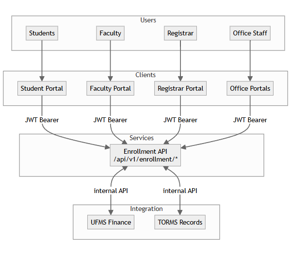
Client-specific routes:
/student/*/faculty/*/registrar/*/offices/:officeType/*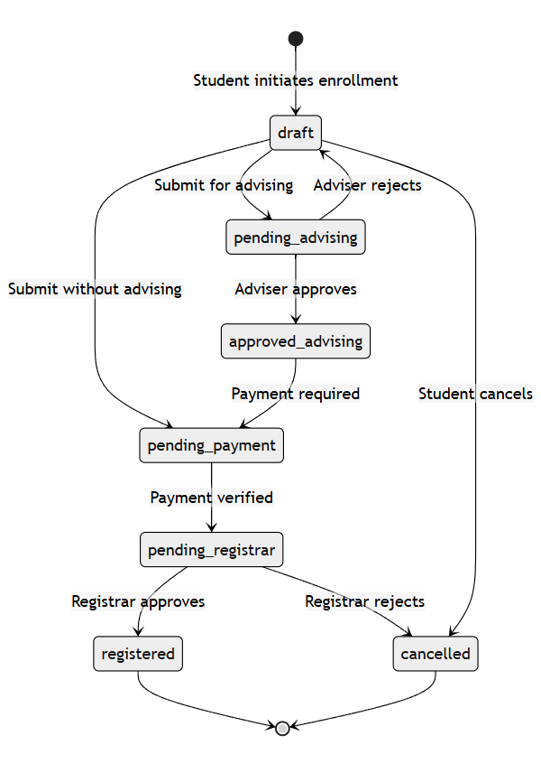
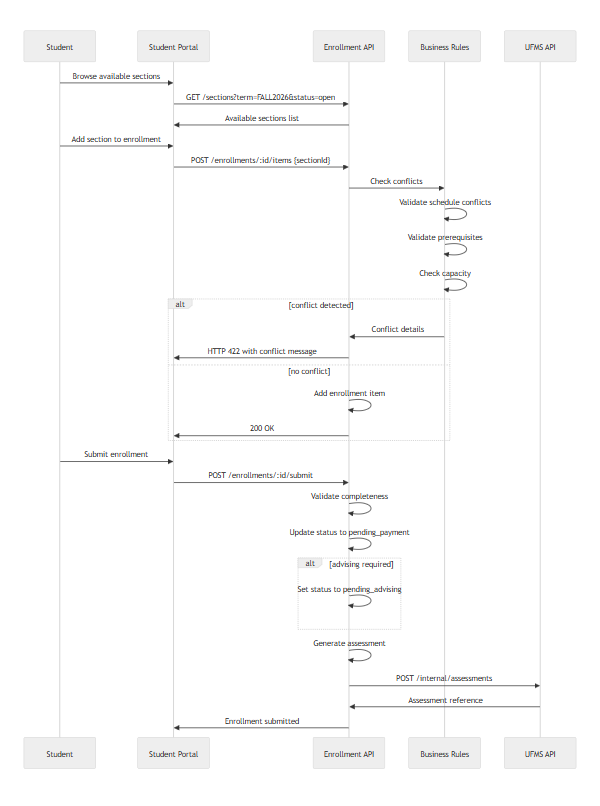
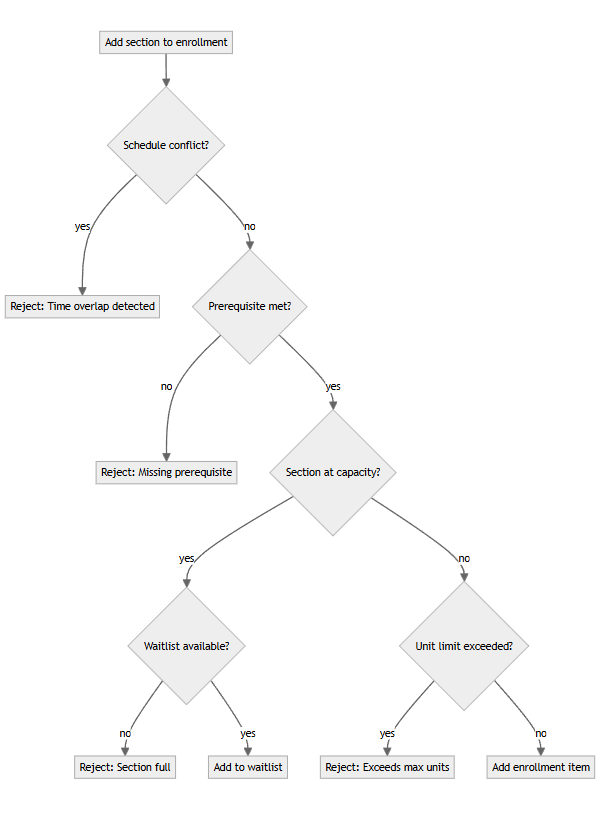
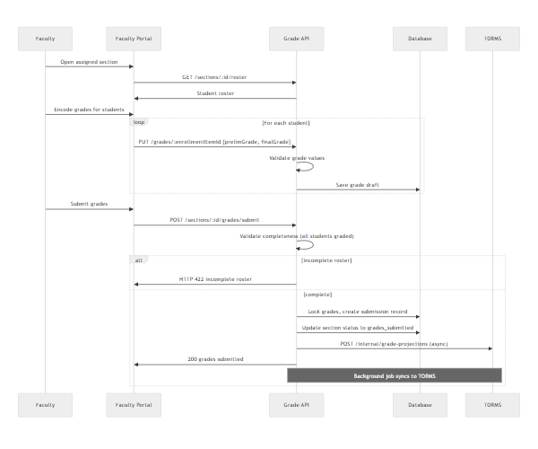
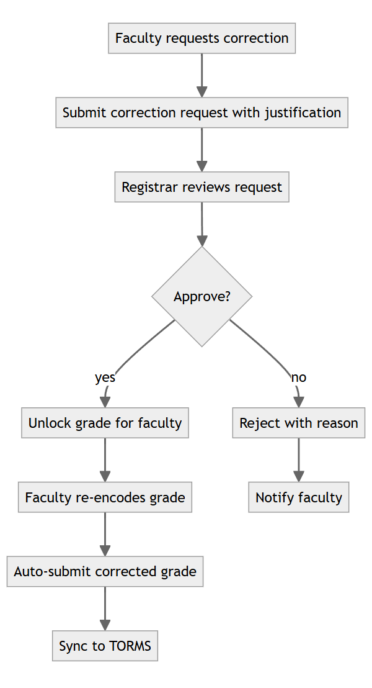
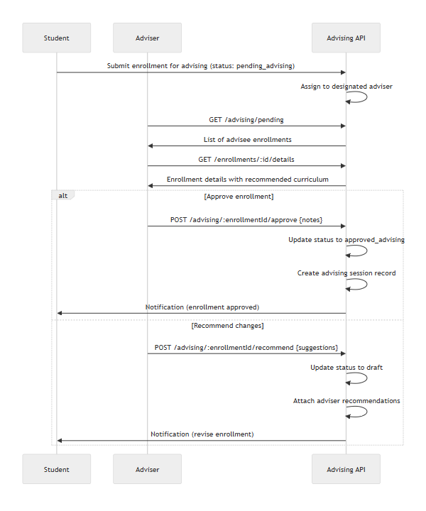
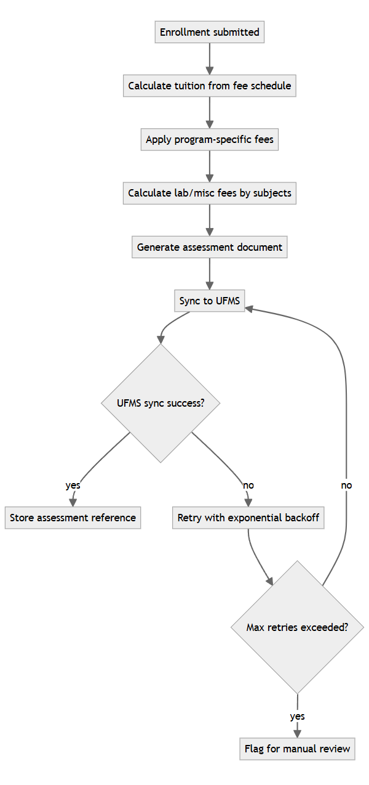
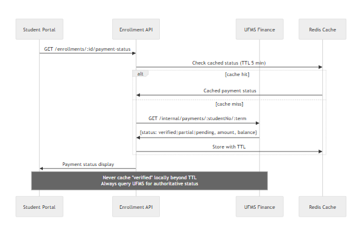
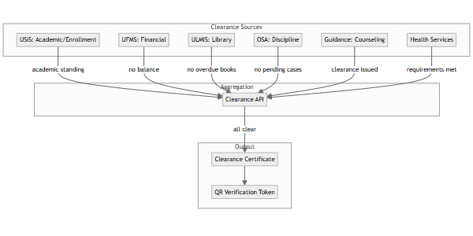
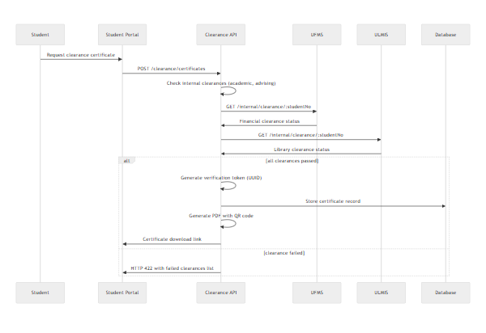
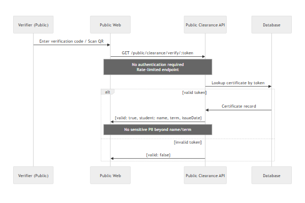
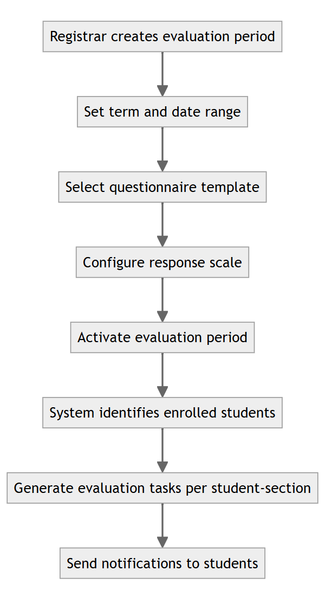
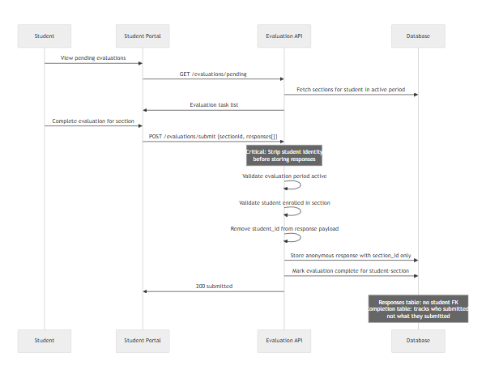
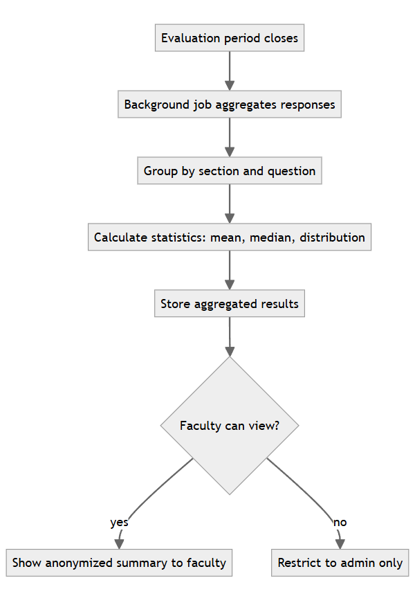
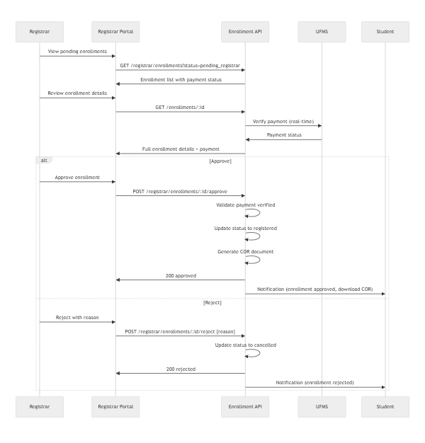
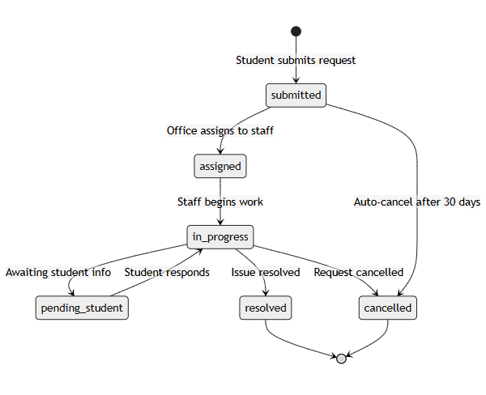
| Case | Expected Behavior | HTTP Status | User Message |
|---|---|---|---|
| Enroll with schedule conflict | Block enrollment, return conflicting section | 422 | "Schedule conflict with [Section Name] on [Days] at [Time]" |
| Enroll with missing prerequisite | Block enrollment, list missing prerequisites | 422 | "Prerequisite required: [Course Code]" |
| Enroll in full section without waitlist | Block enrollment | 422 | "Section is full. No waitlist available." |
| Submit incomplete grade roster | Block submission | 422 | "Cannot submit. [N] students have no grades." |
| Query UFMS when service down | Return cached status with warning | 200 | "Payment status (last checked [timestamp]). Verify with cashier if recently paid." |
| Generate clearance with ULMIS down | Fail certificate generation | 503 | "Clearance unavailable. Library system temporarily unreachable." |
| Verify invalid clearance token | Return not found | 404 | "Invalid verification code." |
| Faculty view grades before submission | Allow view of draft grades | 200 | Display with "Draft" indicator |
| Student access other student's data | Authorization failure | 403 | "Access denied." |
| Registrar override without permission | Authorization failure | 403 | "Insufficient permissions for override." |
| Evaluation submission outside period | Block submission | 422 | "Evaluation period has ended." |
| Duplicate enrollment submission (idempotency) | Return original submission result | 200 | Previous submission details |
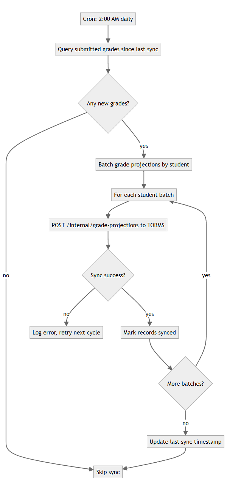
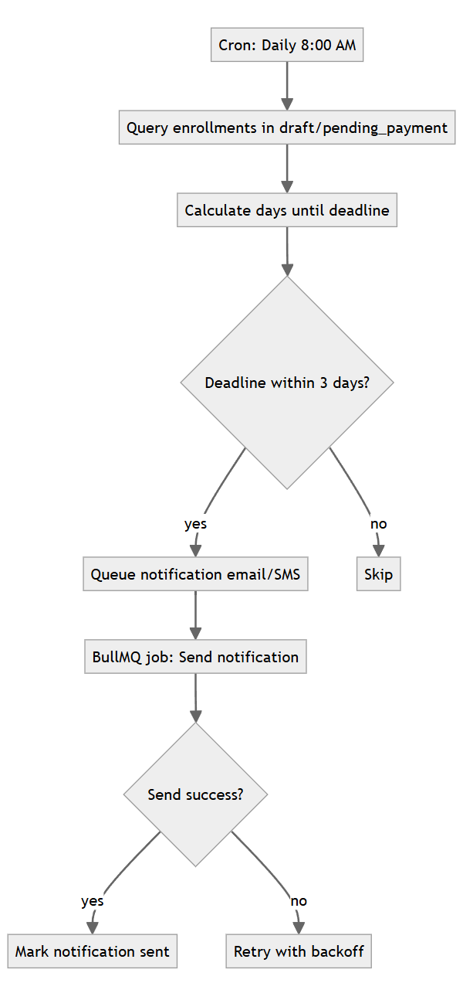
End of LLD — USiS